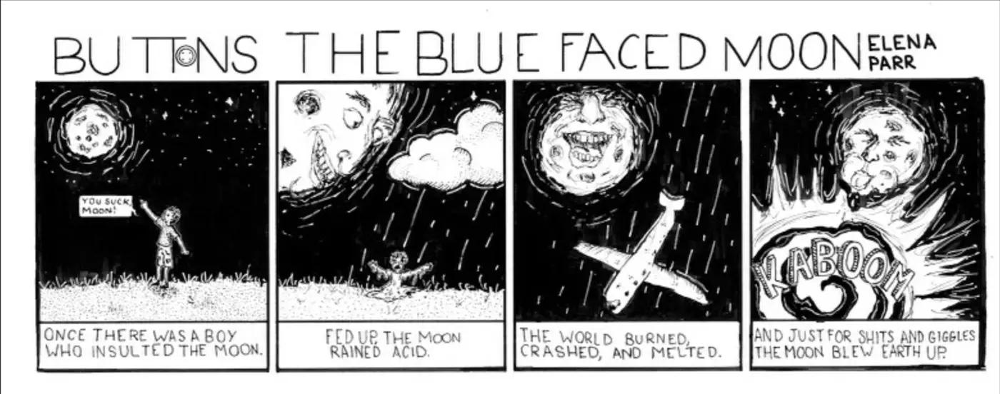
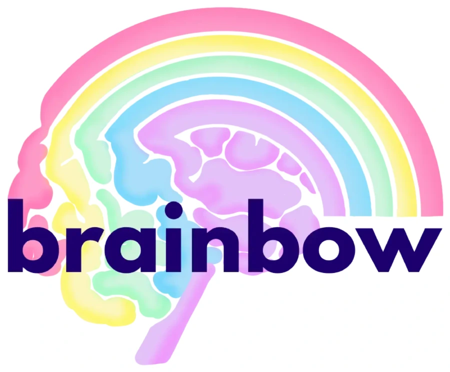
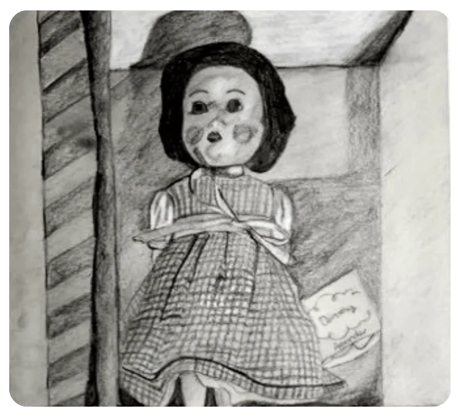
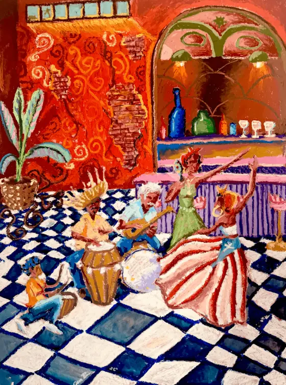
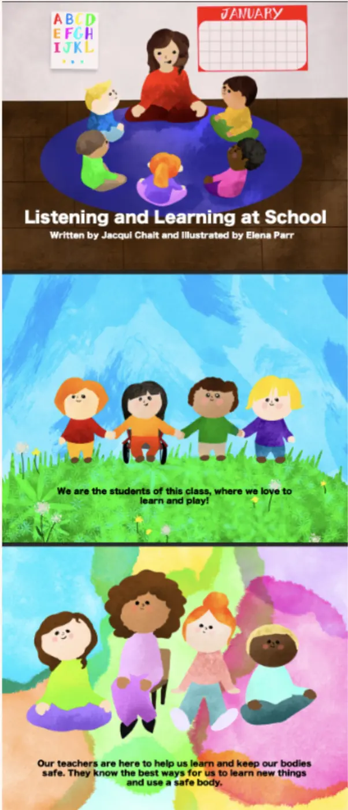
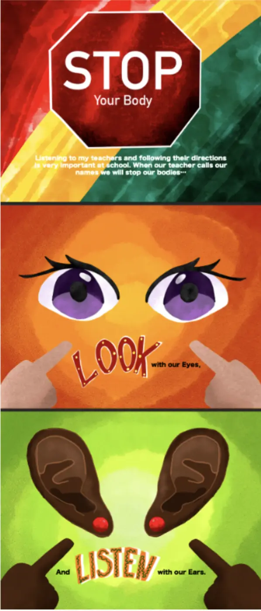

Kids Art From Activity *
The emotion piece activity was led for a preschool art show, where children were asked to let an emotion exploration guide their color choices and markings.
Illustrator & multidisciplinary designer — fine art, publications, educational design, branding, and a storytelling universe called Stellina Mae.
See my work01 — About
I launched my freelance art career at 15 in 2019, illustrating a children's book on PANS/PANDAS awareness (co-written by Dr. Avery and Mrs. Bassman) and a novel cover soon after — the work that cemented my path into art.


In 2024 I transferred to University of Tampa, where two hurricanes forced two evacuations in my first semester — yet I still placed top 10 in Tampa's C.R.E.A.T.E. pitch competition. I returned to Maine after one semester and now attend USM while working as a nanny and building my current project: Stellina Mae's Storytime Adventures, a storytelling brand weaving together everything I've learned along the way.

In 2021 I attended MECA's pre-college program, majoring in painting and illustration, then graduated Falmouth High School with a Fine Arts Endorsement. I spent a year at Lesley University's fine arts program before a creativity and innovation course redirected me toward business. I left to spend a year in early childhood education as a co-lead preschool teacher at Goldman Family Preschool.

Tap a sticker to pin up its story.
02 — Fine Art & Studio Practice
Traditional drawing built my understanding of form, composition, and light. Today, those foundations continue to influence the colorful, imaginative worlds I create through painting and illustration.





1 / 6
Personal Studio



03 — Design for Learning
Design can teach, comfort, and spark curiosity. My classroom projects combine visual storytelling with creative learning experiences, helping children explore emotions, communication, and imagination through art and play.
The emotion piece activity was led for a preschool art show, where children were asked to let an emotion exploration guide their color choices and markings.

1
2 3
3The emotion piece came right after partnering with the behavioral specialist to create a social story for my classroom when I was co-leading.
04 — Presentation
Every presentation is an opportunity to tell a story. From brand identities to animated pitches, I bring the same illustrative voice to strategy work.
AI Pitch Competition (2026)
For a 2026 AI pitch competition, my team developed a plan to convert fish waste, a natural Maine byproduct, into fertilizer. I synthesized our findings into the final slide deck within our 72-hour window.
Nintendo Redesign (2025 Marketing Final)
For a 2025 marketing final, I led a team as captain, a role earned by winning the class competition on a prior assignment, to design a Nintendo product redesign grounded in user data analysis, which revealed rising interest among female users.
Bueckers × Warner Bros. Presentation (Marketing Midterm)
For my marketing midterm, I created a Bueckers × Warner Bros. brand presentation, voted best in class. That result earned me team captain for the course's final project.
05 — Current Project
Stellina is my largest creative project to date — an immersive storytelling platform that blends illustration, interactive design, music, education, and worldbuilding into one growing universe. It represents the culmination of everything I've learned across publishing, education, branding, and fine art.
Follow the storyTell me what you're dreaming up — I'd love to help bring it to life.
elenamaria.parr@gmail.com